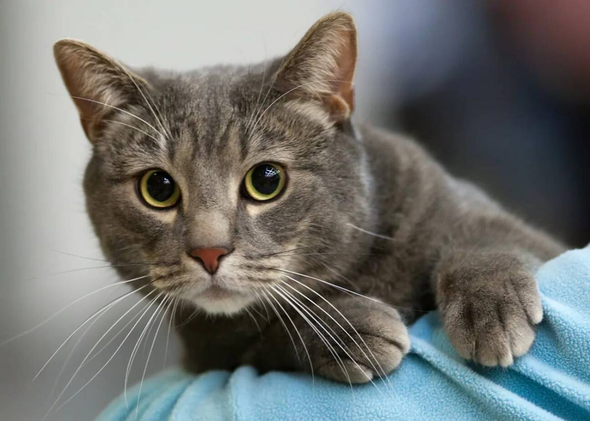
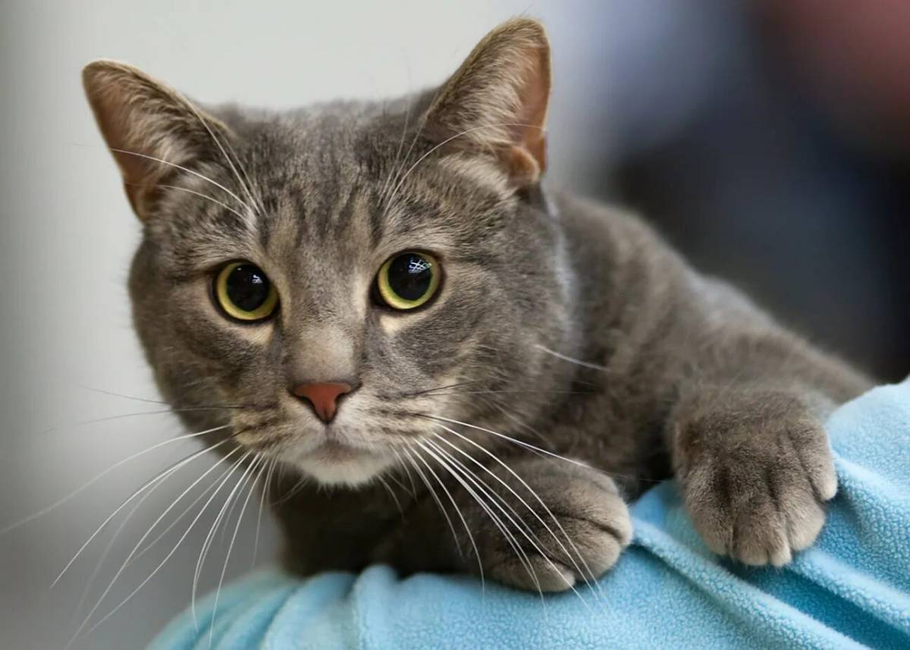

милые животные
котики


 
факты про кошек

факты про кошек
- коты равнодушны к сахару
- животное не может слезть с дерева головой вниз
- мире живет более 500 миллионов домашних кошек.
- животные способны издавать около 100 различных звуков.
- коты страдают непереносимостью лактозы
больше фактов
собаки


 факты про собак
факты про собак
- Собаки привязываются к человеку, как дети
- Собаки настроены понимать людей
- Благодаря собакам люди становятся лучше
- Внешний вид
- Гиперсоциальность
больше фактов
капибары


 факты про капибар
факты про капибар